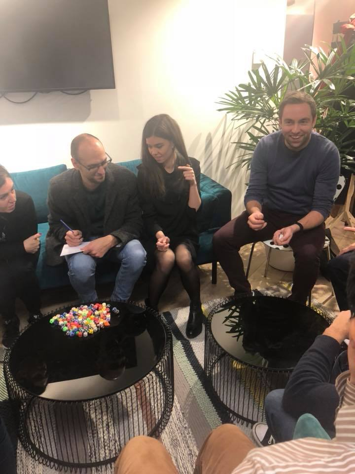

Experts en Tests Logiciels & Assurance Qualité, nous adoptons une démarche complète qui encadre, pilote, accompagne, qualifie, mesure et valide chaque étape de vos processus de développement logiciel.

Identifier les points forts et faibles pour des améliorations ciblées et une satisfaction accrue des utilisateurs.
Accompagner les entreprises à se mettre rapidement à niveau, notamment sur le Référentiel RGAA.
Automatiser vos tests pour améliorer la qualité, l’efficacité, la fiabilité de vos applications.
Évaluer la performance du système en simulant l’expérience des utilisateurs finaux.
The ISTQB foundation level certification is intended for people who participate in software testing projects.
Experts en Tests & Assurance Qualité Logicielle, passion et formation continuelle guident notre engagement à unir la communauté des testeurs au Luxembourg. Entre nos événements, comme le Luxembourg Software Testing Event, et notre Groupe Meetup, nous aimons partager et discuter des dernières tendances et des outils innovants en test logiciel.